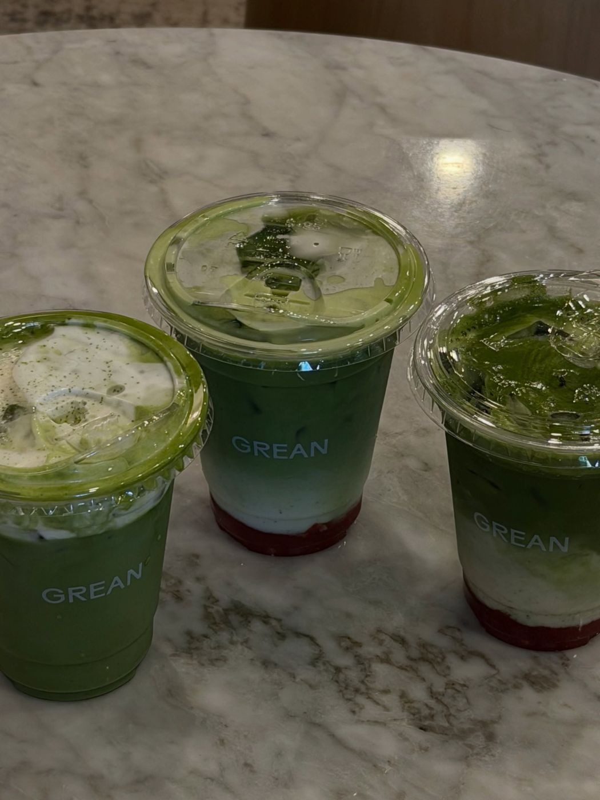
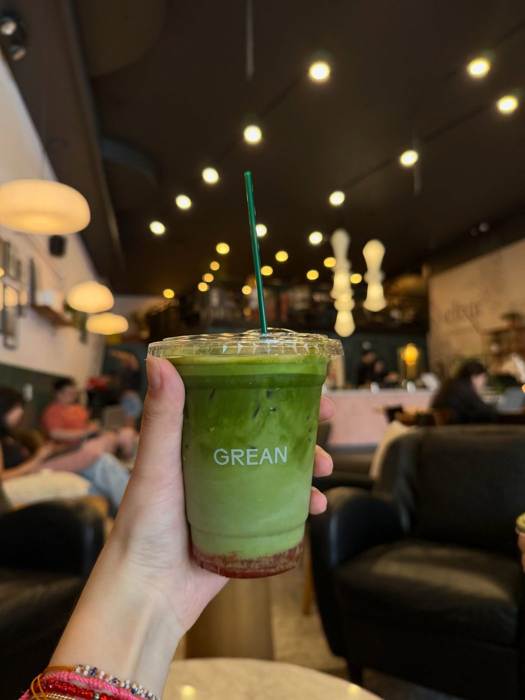
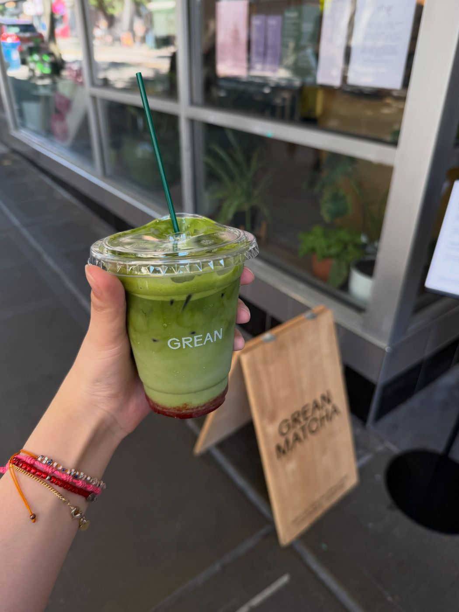

Grean Matcha in the U District
Stopped by after a CorePower class on Sunday! I'd heard good things about this place so I was excited to try it. It's located inside Elixir Cafe in the U District.



Strawberry matcha, 7.5/10. The matcha flavor was definitely there, but I was hoping for a fresher drink with the strawberry. The strawberry tasted like store-bought jam, maybe it was just sweeter than I expected? Overall still a good matcha though!
Banana bread latte, 8.5/10. Lucia ordered this. The foam was creamy and rich with good banana flavor, and it worked really well with the matcha! The only downside: the portion felt small for the price, and the cream could have been a little more velvety so it blended better into the drink.
Jasmine matcha, 9.2/10. Rebekah got this. The jasmine is super light, which she liked since it can easily overpower a drink. It mellows out the matcha tones nicely, so you get hit with matcha first, then strawberry, then a jasmine aftertaste at the end. Minus one for strawberry chunks getting caught in the straw.
These matchas are a bit on the pricier side. I paid $9.40 for one matcha, so I don't know.